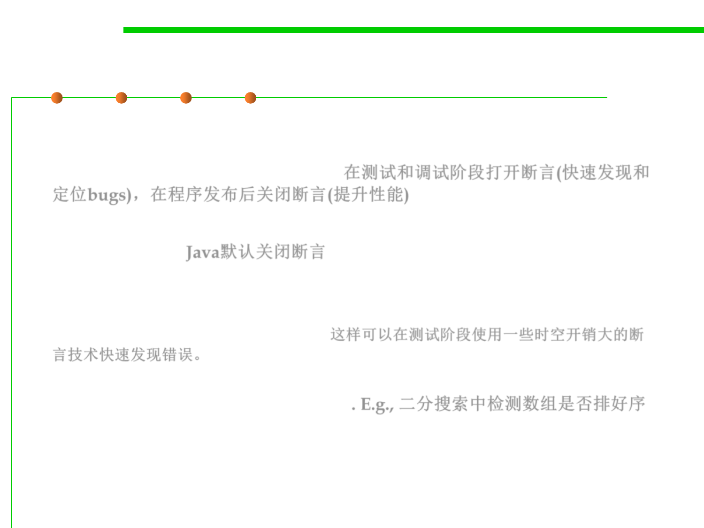

7.3 Assertions and Defensive Programming
Turn on/off Assert in different phases
▪ Many assertion mechanisms are designed so that assertions are
executed only during testing and debugging, and turned off when
the program is released to users. 在测试和调试阶段打开断言(快速发现和
定位bugs)，在程序发布后关闭断言(提升性能)
▪ Java’s assert statement behaves this way. (however, assertions are
off by default) Java默认关闭断言
▪ The advantage of this approach is that you can write very
expensive assertions that would otherwise seriously degrade the
performance of your program. 这样可以在测试阶段使用一些时空开销大的断
言技术快速发现错误。
– For example, a procedure that searches an array using binary search has a
requirement that the array be sorted. E.g., 二分搜索中检测数组是否排好序
– Asserting this requirement requires scanning through the entire array,
however, turning an operation that should run in logarithmic time into
one that takes linear time. You should be willing to pay this cost during
testing, since it makes debugging much easier, but not after the program is
released to users.